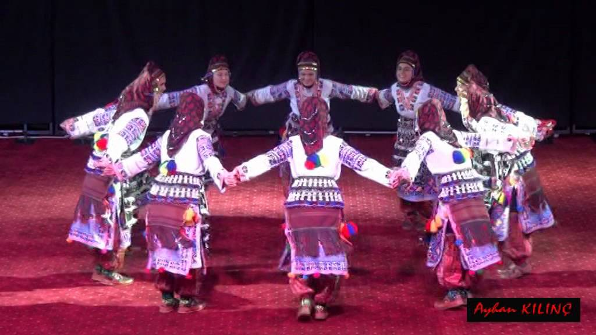

İlimiz Orta Karadeniz ve İç Anadolu bölgesi arasında bir geçiş bölgesi olduğu için genellikle oyunlarımızın karakteristik yapılarına Karadeniz'in sertliği, İç Anadolu'nun yumuşaklığı yansımıştır. Oyunlarımız yöre olarak halay türündedir. Halay; birlik, beraberlik, yardımlaşma gibi toplu hareket anl***** gelmektedir.
Oyunlarımız genellikle karakter olarak ağırlama, yanlama ve yelleme olarak üç bölümde oynanmakta olup üç melodi ve üç ritim vardır. Açık havada davul ve kaba zurna (Galaklı zurna ) eşliğinde eller parmaklardan omuzdan tutularak oynanmaktadır. Ayrıca Horlatmalı kaval (Niksar Erikbelen Köyünde Halen yapılmaktadır), bağlama, cura bağlama, kemençe, mey, def gibi halk sazları da yaygın olarak kullanılmaktadır. Yöre oyunlarımız genellikle 2/4, 4/4, 5/8, 2/8'lik ölçülerle oynanmaktadır.
Halk oyunları, giysi ve figür bakımından ayrı bir güzelliğe sahiptir. İlimizde destan, koşma, divan, semai, garip, derbeder, hurşit, sağma gibi havalar, düğün, sinsin havaları, halay havaları, davar sürme havaları gibi kırık havaları gibi havalar görülmektedir.
Yöre oyunlarımız şekil olarak tek ve çift kişi ile oynanan oyunlar ki bunlara tek oyunlar denilmektedir. Bir de gurup halinde oynanan oyunlarımızda sadece kadınların oynadığı, sadece erkeklerin oynadığı ve kadın ve erkeklerin oynadığı karışık oyunlarımız mevcuttur. Ayrıca orta oyunları da yöremizde yaygın olarak oynanmaktadır.
SİMSİM
Genellikle düğünlerde geceleri oynanan bir oyundur. Düğüne gelenler, misafirler düğün evinin avlusunda büyükçe bir ateş yakarlar önce çeşitli halaylar oynarlar daha sonra ateş etrafında değişik hünerler göstererek ve hepsinden önemlisi ateşin üzerinden atlayarak (ateş üzerinden atlamak eski Türk törelerine-inançlarında günahlardan ve kötülüklerden arınmayı ifade etmektedir.) oynanır. Aynı zamanda karşısında oynayan kişiye de çeşitli aldatmalar yapılır. Kesinlikle arkadan rakibine vurulmaz. Oyun sevgiyi, dostluğu, hoşgörüyü ifade etmekte olup, bütün düğünlerde oynanmaktadır.
KARTAL OYUNU
Dağlık ve engebeli bir arazide geçimi çiftçilik ve hayvancılıkla sağlayan yöre halkının kartalın uçuşunu, süzülüşünü ve avına saldırmasını ifade eden taklidi hareketleri zaman içinde oyun haline getirerek oynanmakta olan bir oyundur.
TOKAT AĞIRLAMASI
Yörenin en belirgin oyunu olup, düğüne gelen misafirlerin ağırlanmasını, karşılanmasını, hoşnut edilmesini ifade etmektedir. Üç melodisi olup, ağırlama, yanlama ve yelleme bölümlerinde oynanan bir oyundur.
KOYUN YÜZÜ - SAYA GEZME - BEREKET - DEVE OYUNU
Yöremizde genellikle koyunların kuzuladığı döl alma mevsimi denilen Şubat-Mart aylarından başlayarak toprağın canlandığı bereketin, bolluğun çoğaldığı bu dönemlerde davul ve zurna eşliğinde erkeklerin oynadığı bir sıra gezme oyunudur.
Oyunda kız kıyafeti giyinmiş erkek oyuncular, söyleyici (okuyucu), kahya, yöreye göre dede, aşık gibi kişiler vardır. İki kişinin sırtlarına merdiven konularak ön tarafa bir kazma ile deve başı yapılır ve zil takılır. Kilim, cecim gibi malzemelerle üstü kapatılarak ortaya bir semer konulur ve deve yapılır. Davul ve zurna ile söyleyici oyuna iştirak eden oyuncularıyla birlikte bütün köyü gezer ve her evin kapısında ;
Hey hayadan hey hayadan
Yılan çıkmış kayadan
Yoksulluktan gelmedik
Adet kaldı sayadan (atadan)
der ve oyunlar oynanır. Seyredenler kızların kaçırmak isterler. Gülünür, şakalaşılır, taklit veya çeşitli yiyecek vermekle cezalandırılır. Toplanan hediyeler köyün en fakirine verilir veya yemek yapılarak hep birlikte yenilir.
OMUZ HALAYI
Tokat ağırlaması içerisinde oynanmakta olan bu oyunda yöre insanının her işinde kendisine yardımcı olan kadınlara vermiş olduğu değeri ve onu baş tacı etmesini ifade etmektedir. Eskiden gelin, gelin alıcılarla birlikte baba evinden atlara bindirilerek getirilir, damat evine geldikleri zaman onları karşılayanlar bir yandan oyunlarını oynarken bir yandan da çömelerek at üzerindeki kadınları-gelini omuzlarına alırlar, hep birlikte oyun oynadıktan sonra yere indirirlerdi. Bu oyunda yöremizde halen sevilerek oynanan oyunlarımızdandır.
KIRKLAR SEMAHI (Ya Hızır Semahı)
Ayin-i cemlerde bu semahı yapacak insanları dinsel bakımdan olgunluğa erişmiş, yaş ve inanç bakımından da erişkin olması zorunludur. Çocuklar ve gençler bu semaha katılamazlar. Kadınlı ve erkekli yapılan bu semaha en az üç en fazla on iki kişi katılır. Önce cemi yöneten dedeye veya babaya niyazla başlanır, bağlama eşliğinde miraçlama denilen tekke edebiyatı ezgisiyle yapılır. Ağırlama ve dönme figürleri vardır. Ağırlamada erkeklerin avuç içi yere, kadınların avuç içi yukarı (semaya) dönüktür. Alevi-Bektaşi ayin-i cemlerinde kadın-erkek, bacı-kardeştir. Bu nedenle, dinsel bakımdan bütünlük söz konusudur. Dönme ise bütün canlıların Hak'kın etrafında döndüğünü temsil eder. Bacıların avuçlarının semaya açık olması Hak'tan almayı, erkeklerin avuçlarının yere bakması ise halka vermeyi temsil eder.